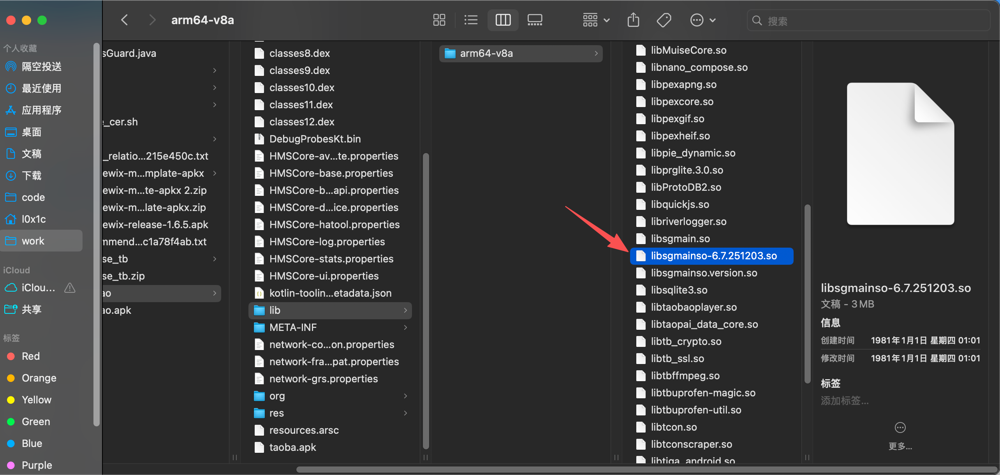
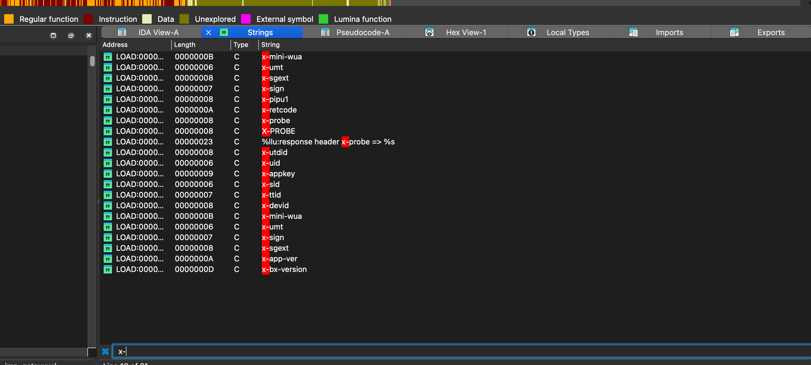
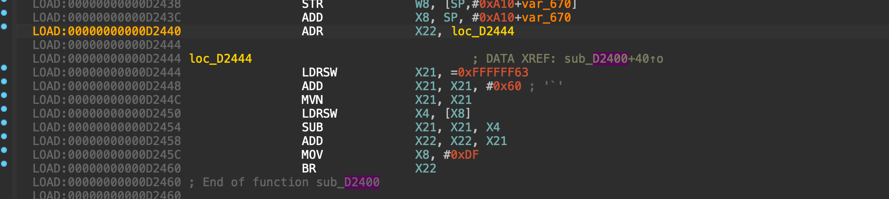
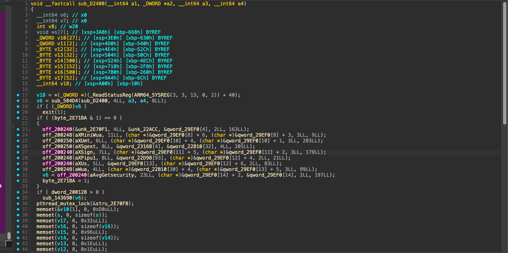
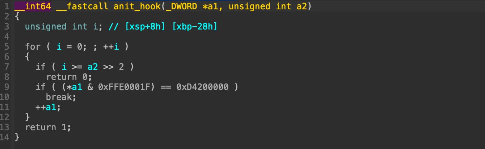
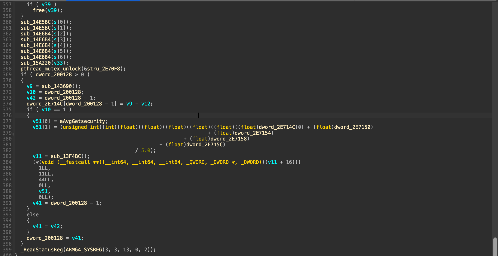
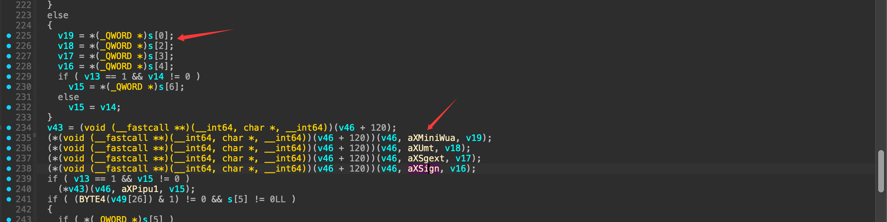
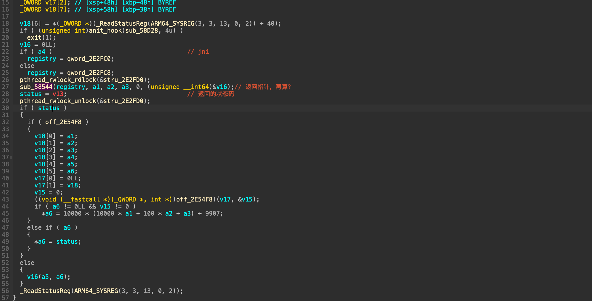
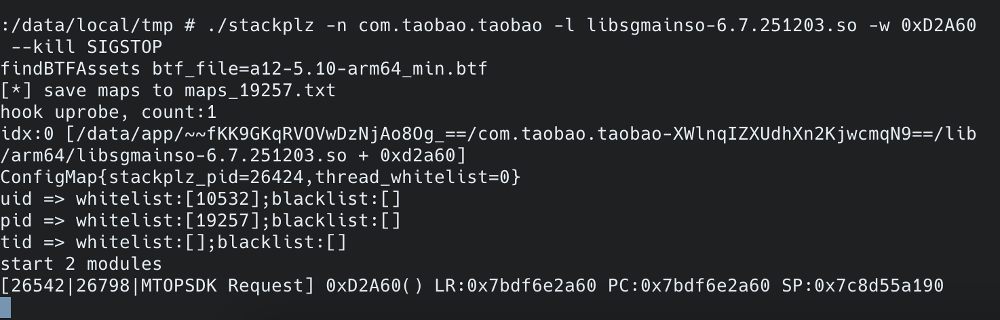
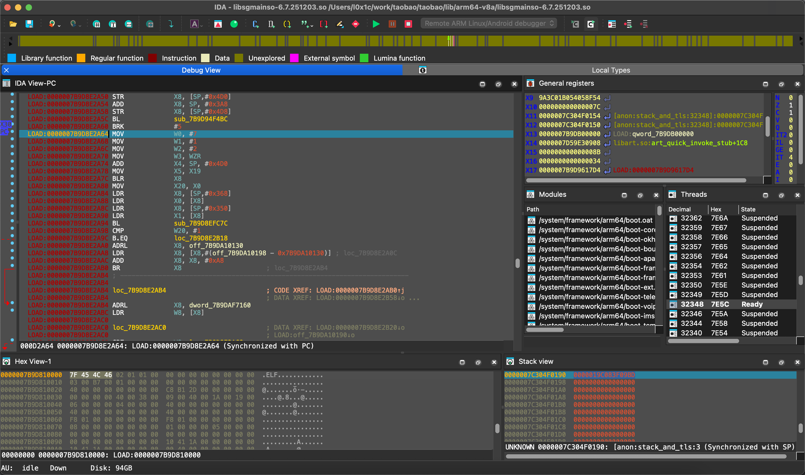

淘宝app逆向
1

主要的so：libsgmainso-6.7.251203.so
还是根据之前windows上逆向的思路问题，其实自己拖到ida中看了一下这个so，里面的其他的段我没看到，第一个反应就是直接dump看看差异，是不是内存解密了
pidof com.taobao.taobao
cat /proc/19408/maps | grep "libsgmainso-6.7.251203.so"
77dc486000-77dc62b000 r-xp 00000000 fe:4a 33069 /data/app/~~Bw8fZLhdSgT8iQaEqzZIOZ==/com.taobao.taobao-6gedRCLNJgGwpWyLbtDUpn==/lib/arm64/libsgmainso-6.7.251203.so
77dc62e000-77dc631000 r--p 001a4000 fe:4a 33069 /data/app/~~Bw8fZLhdSgT8iQaEqzZIOZ==/com.taobao.taobao-6gedRCLNJgGwpWyLbtDUpn==/lib/arm64/libsgmainso-6.7.251203.so
77dc634000-77dc769000 rw-p 001a6000 fe:4a 33069 /data/app/~~Bw8fZLhdSgT8iQaEqzZIOZ==/com.taobao.taobao-6gedRCLNJgGwpWyLbtDUpn==/lib/arm64/libsgmainso-6.7.251203.so
dump的方式：https://github.com/lasting-yang/frida_dump (具体的dump的方式github上这里有写使用的方式)
dump后可以看到里面会出现相关的x-sign x-mini-wua的字段了

我通过x-sign交叉引用回去（D2400），看到了很多br跳转的混淆存在打了原本的控制流

写idapython的脚本去去除混淆
import ida_bytes
import ida_funcs
import ida_auto
import idc
def patch_b(ea, target):
off = (target - ea) >> 2
if off < -(1 << 25) or off > (1 << 25) - 1:
raise ValueError("branch out of range: %x -> %x" % (ea, target))
insn = 0x14000000 | (off & 0x03FFFFFF)
ida_bytes.patch_dword(ea, insn)
if idc.print_insn_mnem(0xD2460) == "BR":
patch_b(0xD2460, 0xD2478)
if idc.print_insn_mnem(0xD2F08) == "BR":
patch_b(0xD2F08, 0xD2F20)
idc.create_insn(0xD2478)
idc.create_insn(0xD2F20)
f = ida_funcs.get_func(0xD2400)
if f:
ida_funcs.del_func(0xD2400)
ida_funcs.add_func(0xD2400)
ida_auto.auto_wait()

这里做为检查是不是BRK指令，这里检测是不是被hook

import ida_bytes
import ida_funcs
import ida_auto
import idc
def patch_b(ea, target):
off = (target - ea) >> 2
if off < -(1 << 25) or off > (1 << 25) - 1:
return False
insn = 0x14000000 | (off & 0x03FFFFFF)
ida_bytes.patch_dword(ea, insn)
return True
def is_add_x8_imm(ea):
return (
idc.print_insn_mnem(ea) == "ADD"
and idc.print_operand(ea, 0) == "X8"
and idc.print_operand(ea, 1) == "X8"
and idc.get_operand_type(ea, 2) == idc.o_imm
)
def is_ldr_x8_from_x8_disp(ea):
if idc.print_insn_mnem(ea) != "LDR":
return False
if idc.print_operand(ea, 0) != "X8":
return False
op1 = idc.print_operand(ea, 1)
return op1.startswith("[X8") or op1.startswith("[x8")
def find_base_from_adr(ldr_ea, scan_start):
ea = idc.prev_head(ldr_ea, scan_start)
steps = 0
while ea != idc.BADADDR and steps < 10:
m = idc.print_insn_mnem(ea)
if m == "ADRL" and idc.print_operand(ea, 0) == "X8":
return idc.get_operand_value(ea, 1)
if m == "ADRP" and idc.print_operand(ea, 0) == "X8":
base = idc.get_operand_value(ea, 1)
next_ea = idc.next_head(ea, ldr_ea)
if is_add_x8_imm(next_ea):
base += idc.get_operand_value(next_ea, 2)
return base
ea = idc.prev_head(ea, scan_start)
steps += 1
return None
def resolve_br_x8(br_ea, scan_start):
target_add = 0
ldr_ea = None
disp = 0
ea = idc.prev_head(br_ea, scan_start)
steps = 0
while ea != idc.BADADDR and steps < 12:
if ldr_ea is None and is_add_x8_imm(ea):
target_add = idc.get_operand_value(ea, 2)
if is_ldr_x8_from_x8_disp(ea):
ldr_ea = ea
disp = idc.get_operand_value(ea, 1)
break
ea = idc.prev_head(ea, scan_start)
steps += 1
if ldr_ea is None:
return None
base = find_base_from_adr(ldr_ea, scan_start)
if base is None:
return None
ptr_addr = base + disp
ptr = idc.get_qword(ptr_addr)
if not ptr:
return None
return ptr + target_add
def patch_br_x8_in_range(start, end):
ea = start
brs = patched = skipped = 0
while ea < end:
if not idc.print_insn_mnem(ea):
idc.create_insn(ea)
if idc.print_insn_mnem(ea) == "BR" and idc.print_operand(ea, 0) == "X8":
brs += 1
tgt = resolve_br_x8(ea, start)
if tgt and patch_b(ea, tgt):
idc.create_insn(tgt)
patched += 1
else:
skipped += 1
size = idc.get_item_size(ea)
if size <= 0:
size = 4
ea += size
print("br", brs, "patched", patched, "skipped", skipped)
ida_auto.auto_wait()
patch_br_x8_in_range(0xD2400, 0xD3960)
两个脚本执行完后，自己把fuction的大小替换一下就行了，效果（截取了一小部分）：

看起来比较像这里赋值的

v52[0] = v49;
v52[1] = s;
v4 = sub_13F4BC();
v5 = *(v4+0x10)(7,1,2,0, v52, a2);（0xD2A5C~0xD2A80）
可以看到v52和s相关，v52 = { v49, s }，也就是 输入参数 v49 + 输出数组 s
s[0]=x-mini-wua，s[1]=wua，s[2]=x-umt，s[3]=x-sgext，s[4]=x-sign，s[5]=x-us，s[6]=x-pipu1
x-sign的实际的值是由sub_13F4BC返回对象的vtable+0x10方法计算出来的
这个位置直接hook去看一下值
var libsgmain_base = Process.getModuleByName("libsgmainso-6.7.251203.so")
console.log("libsgmain_base: " + libsgmain_base.base)
Interceptor.attach(libsgmain_base.base.add(0xD2A7C), {
onEnter: function (args) {
//LDR X8, [X0,#0x10]
const x8 = this.context.x8;
console.log("Base 0xD2A7C --- > x8: " + x8);
}
});
var addr2 = libsgmain_base.base.add(0x000d2b00)
console.log("" + addr2);
console.log(Instruction.parse(addr2).toString());
Interceptor.attach(addr2, {
onEnter: function (args) {
console.log("x-sign str from 2 hooked")
var x0 = this.context.x0;
console.log("str addr:" , x0,"sp: ",this.context.sp );
console.log(hexdump(ptr(x0), { length: 50, ansi: true }));
}
})
//0x58d28
直接看一下0x58d28的函数在做什么，还是老的一套去除br间接跳转的混淆

函数58544：
它维护三层结构，按照a2，a3，a4三层进行查询，主要就看这个v16指向了哪里 这里hook的时候有个很有意思的情况
var libsgmain_base = Process.getModuleByName("libsgmainso-6.7.251203.so")
console.log("libsgmain_base: " + libsgmain_base.base)
Interceptor.attach(libsgmain_base.base.add(0xD2A7C), {
onEnter: function (args) {
//LDR X8, [X0,#0x10]
const x8 = this.context.x8;
console.log("Base 0xD2A7C --- > x8: " + x8);
}
});
var addr3 = libsgmain_base.base.add(0x00058F2C)
console.log("" + addr3);
console.log(Instruction.parse(addr3).toString());
Interceptor.attach(addr3, {
onEnter: function (args) {
//58F2C BLR X8
const a1 = this.context.x22.toUInt32();
const a2 = this.context.x21.toUInt32();
const a3 = this.context.x20.toUInt32();
if(a1 != 7 || a2 != 1 || a3 != 2)
return;
var x8 = this.context.x8;
var off = (x8 - libsgmain_base.base);
off = off.toString(16).toUpperCase();
console.log("Base 0x58F2C --- > x8: " + x8 + " off: " + off);
}
});
Base 0x58F2C --- > x8: 0x79c15b2400 off: D2400
Base 0xD2A7C --- > x8: 0x79c1538d28
Base 0x58F2C --- > x8: 0x79c15b2400 off: D2400
Base 0xD2A7C --- > x8: 0x79c1538d28
Base 0x58F2C --- > x8: 0x79c15b2400 off: D2400
Base 0xD2A7C --- > x8: 0x79c1538d28
Base 0x58F2C --- > x8: 0x79c15b2400 off: D2400
Base 0xD2A7C --- > x8: 0x79c1538d28
Base 0x58F2C --- > x8: 0x79c15b2400 off: D2400
Base 0xD2A7C --- > x8: 0x79c1538d28
Base 0x58F2C --- > x8: 0x79c15b2400 off: D2400
Base 0xD2A7C --- > x8: 0x79c1538d28
Base 0x58F2C --- > x8: 0x79c15b2400 off: D2400
Base 0xD2A7C --- > x8: 0x79c1538d28
Base 0x58F2C --- > x8: 0x79c15b2400 off: D2400
Base 0xD2A7C --- > x8: 0x79c1538d28
这个出来的地址又指向了自己？！trace看一下为什么
let android_path = "/data/data/com.taobao.taobao/libattd.so";
let target = "Warning"
function trace_str(qbdi, addr, end, printMode) {
let m = qbdi
if (!m) {
console.error("load so fail")
return
}
let trace = m.findExportByName("trace")
let set_log_path = m.findExportByName("set_log_path")
// let f1 = m.findExportByName("attd_trace")
if (!trace||!set_log_path) {
console.error("loaded but no sym")
return
}
console.log(trace)
let trace_function = new NativeFunction(trace, "void", ["pointer", "pointer", "int", "int"])
let set_log_path_function = new NativeFunction(set_log_path, "void", ["pointer"])
trace_function(addr, end, 1 , printMode)
var path = Memory.alloc(0x420);
path.writeUtf8String("/data/data/com.taobao.taobao/")
set_log_path_function(path)
}
function sleep(s) {
let start = new Date().getTime();
while (new Date().getTime() - start < 1000 * s) { }
}
var mInterval = setInterval(function () {
var sgame = Process.findModuleByName("libsgmainso-6.7.251203.so");
if (sgame == null) {
console.log("无");
return;
}
clearInterval(mInterval);
var addr4 = sgame.base.add(0x00000d2a7c)
console.log("" + addr4);
console.log(Instruction.parse(addr4).toString());
let listen = Interceptor.attach(addr4, {
onEnter: function (args) {
listen.detach()
console.log("trace hooked")
sleep(1)
var ttd_name = "libattd.so"
// console.log("ttd_name:", Process.enumerateModules().map(m => m.name))
let qbdi = Process.findModuleByName(ttd_name)
console.log("trace_addr:", this.context.x8)
trace_str(qbdi, this.context.x8.add(4), sgame.base.add(0x0d2a88), 3)
}
})
},1)
Module.load(android_path)
trace后，发现好像是没有完整的在三层表中找到正确的地址，0x19dae0
调试环境的问题
想了一下，还是得调试起来，搞一搞调试的环境
https://github.com/SeeFlowerX/stackplz
要在tb起起来之前起stackplz，所以要用文件的uprobe，才能断下来
./stackplz -n com.taobao.taobao -l libsgmainso-6.7.251203.so -w 0xD2A60 --kill SIGSTOP

ida server丢进去后adb forward tcp:23946 tcp:23946
到ida里把线程全部suspend后，找到对应的tid，然后启动起来就可以断下来了

2
那么开始分析之前遗留的一些问题 通过调试可以到达161430的位置，这里做的就是在解析一个类似于elf文件的东西，看内存好像叫做uvm的东西
vmp模式
LOAD:0000000000151990 B1 0E 41 78 LDRH W17, [X21,#0x10]!
LOAD:0000000000151994 F4 7A 71 F8 LDR X20, [X23,X17,LSL#3]
LOAD:0000000000151998 75 07 00 F9 STR X21, [X27,#8]
202：